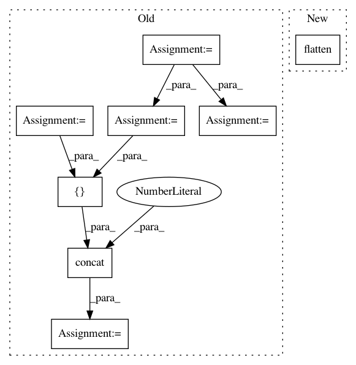

69f25c6028d71e23a7b267b0e1071ad216290f91,baselines/a2c/policies.py,MlpPolicy,__init__,#MlpPolicy#Any#Any#Any#Any#Any#Any#,133
Before Change
class MlpPolicy(object):
def __init__(self, sess, ob_space, ac_space, nbatch, nsteps, reuse=False): //pylint: disable=W0613
ob_shape = (nbatch,) + ob_space.shape
actdim = ac_space.shape[0]
X = tf.placeholder(tf.float32, ob_shape, name="Ob") //obs
with tf.variable_scope("model", reuse=reuse):
activ = tf.tanh
h1 = activ(fc(X, "pi_fc1", nh=64, init_scale=np.sqrt(2)))
h2 = activ(fc(h1, "pi_fc2", nh=64, init_scale=np.sqrt(2)))
pi = fc(h2, "pi", actdim, init_scale=0.01)
h1 = activ(fc(X, "vf_fc1", nh=64, init_scale=np.sqrt(2)))
h2 = activ(fc(h1, "vf_fc2", nh=64, init_scale=np.sqrt(2)))
vf = fc(h2, "vf", 1)[:,0]
logstd = tf.get_variable(name="logstd", shape=[1, actdim],
initializer=tf.zeros_initializer())
pdparam = tf.concat([pi, pi * 0.0 + logstd], axis=1)
self.pdtype = make_pdtype(ac_space)
self.pd = self.pdtype.pdfromflat(pdparam)
a0 = self.pd.sample()
neglogp0 = self.pd.neglogp(a0)
self.initial_state = None
def step(ob, *_args, **_kwargs):
a, v, neglogp = sess.run([a0, vf, neglogp0], {X:ob})
return a, v, self.initial_state, neglogp
def value(ob, *_args, **_kwargs):
return sess.run(vf, {X:ob})
self.X = X
self.pi = pi
self.vf = vf
self.step = step
self.value = value
After Change
flatten = tf.layers.flatten
pi_h1 = activ(fc(flatten(X), "pi_fc1", nh=64, init_scale=np.sqrt(2)))
pi_h2 = activ(fc(pi_h1, "pi_fc2", nh=64, init_scale=np.sqrt(2)))
vf_h1 = activ(fc(flatten(X), "vf_fc1", nh=64, init_scale=np.sqrt(2)))
vf_h2 = activ(fc(vf_h1, "vf_fc2", nh=64, init_scale=np.sqrt(2)))
vf = fc(vf_h2, "vf", 1)[:,0]
In pattern: SUPERPATTERN
Frequency: 3
Non-data size: 8
Instances
Project Name: openai/baselines
Commit Name: 69f25c6028d71e23a7b267b0e1071ad216290f91
Time: 2018-05-01
Author: peterzhokhoff@gmail.com
File Name: baselines/a2c/policies.py
Class Name: MlpPolicy
Method Name: __init__
Project Name: openai/baselines
Commit Name: 69f25c6028d71e23a7b267b0e1071ad216290f91
Time: 2018-05-01
Author: peterzhokhoff@gmail.com
File Name: baselines/ppo2/policies.py
Class Name: MlpPolicy
Method Name: __init__
Project Name: asyml/texar
Commit Name: af461df627ef660d1a71b6981dedb4e4b504ba9a
Time: 2017-09-25
Author: junxianh2@gmail.com
File Name: txtgen/modules/connectors/connectors.py
Class Name: StochasticConnector
Method Name: _build